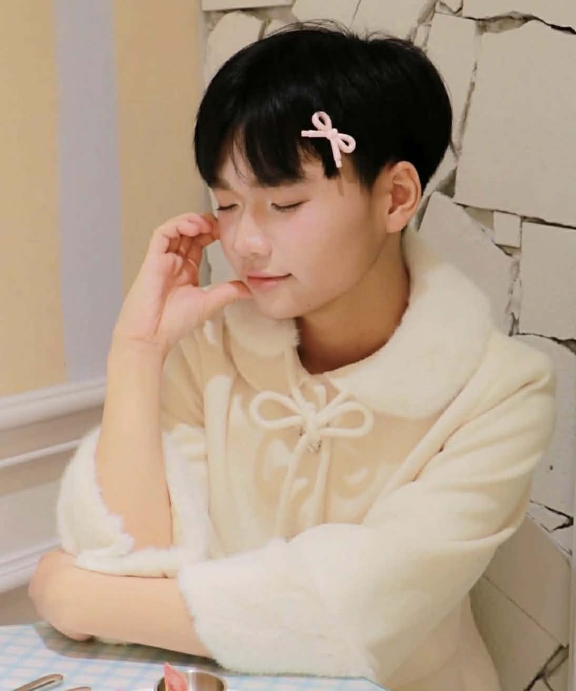
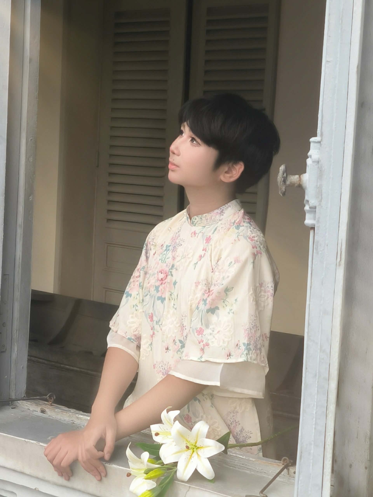
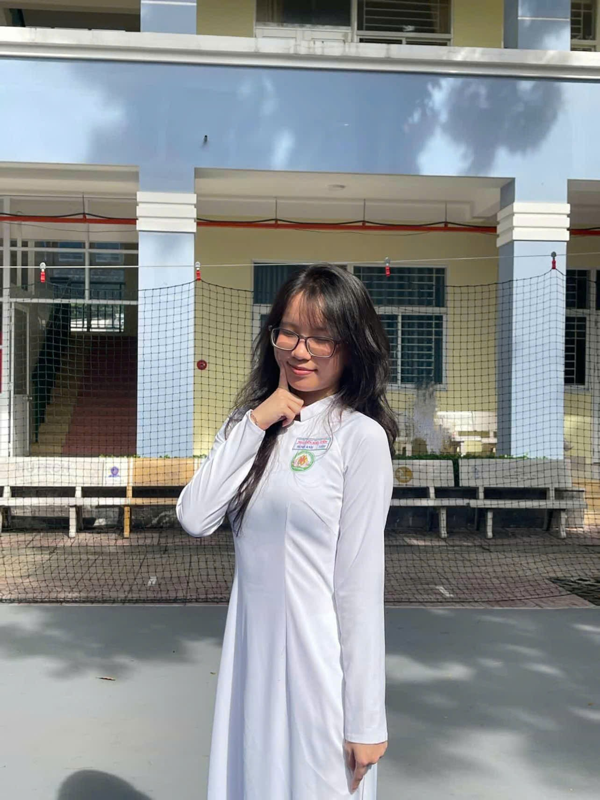
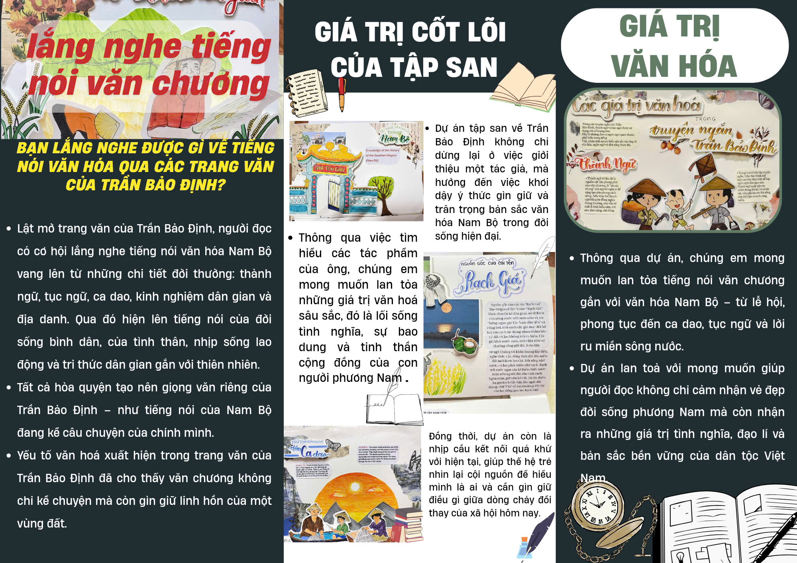
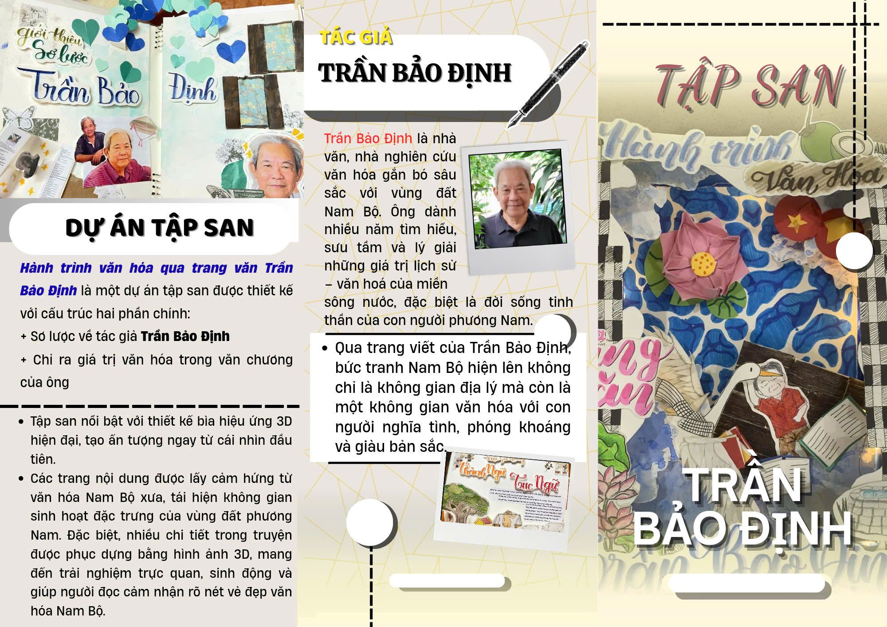

Giới thiệu
Chào mừng bạn đến với tập san "Dọc miền văn học, lắng nghe thanh âm phương Nam" — nơi chúng tôi cùng nhau khám phá những giá trị văn học đặc sắc của vùng đất phương Nam qua từng trang viết, từng câu chuyện và từng thanh âm đậm đà bản sắc.
"Văn học là tấm gương phản chiếu tâm hồn dân tộc, và phương Nam là nơi ấy cất lên những giai điệu ngọt ngào nhất..."
Sứ mệnh
- 🌸 Lan tỏa tình yêu văn học đến mọi bạn đọc
- 🌸 Khám phá vẻ đẹp văn chương phương Nam
- 🌸 Kết nối thế hệ trẻ với di sản văn hóa
- 🌸 Tạo sân chơi sáng tạo cho học sinh
Nội dung nổi bật
Văn học dân gian
Ca dao, tục ngữ, truyện cổ tích phương Nam
Văn học hiện đại
Tác phẩm tiêu biểu của các nhà văn Nam Bộ
Thanh âm phương Nam
Âm nhạc, nghệ thuật & đời sống văn hóa
🌸 Thành viên Ban biên tập 🌸
Những người đồng hành trên hành trình văn học
NHÀ THIẾT KẾ
DESIGNER
Lớp 11D2
NHÀ THIẾT KẾ
DESIGNER
Lớp 11D2
NHÀ THIẾT KẾ
DESIGNER
Lớp 11D2
NHÀ THIẾT KẾ
DESIGNER
Lớp 11D2

NHÀ THIẾT KẾ
DESIGNER
Lớp 11D2

NHÀ THIẾT KẾ
DESIGNER
Lớp 11D2

NHÀ THIẾT KẾ
DESIGNER
Lớp 11D2
NHÀ THIẾT KẾ
DESIGNER
Lớp 11D2
NHÀ THIẾT KẾ
DESIGNER
Lớp 11D2
📖 Tập san — Tiếng Việt
Những bài viết bằng tiếng Việt về văn học phương Nam
📑 Mục lục bài viết
🖋️ I. TÁC GIẢ TRẦN BẢO ĐỊNH
Trần Bảo Định (bút danh: Cao Thị Hoàng, Lê Kim Phượng) sinh năm 1944 tại xã An Vĩnh Ngãi, thành phố Tân An, tỉnh Long An.
💫 Quê hương ảnh hưởng
Mành đất miền Tây Nam Bộ chằng chịt kênh rạch, đẹp bình dị, mộc mạc — cũng là quê hương cha và quê vợ của nhà văn.
🌊 Tuổi thơ bên dòng sông
Quê hương bồi đắp kỉ niệm cho tuổi thơ Trần Bảo Định. Ông được tắm mát bởi dòng sông Bảo Định, được lớn lên trong ngân vang của những câu hò miền sông nước, trong tình yêu thương, sự dạy dỗ nghiêm khắc, cẩn trọng của cha và mẹ.
📚 Truyền thống hiếu học
Từ gia đình, quê hương, Trần Bảo Định được vun đắp truyền thống hiếu học — không chỉ coi trọng "chữ" mà còn trọng "nghĩa", sống không chỉ dựa vào "lý" mà còn cần có "tình".
— Hầu Thị Yến, 2021
✨ II. CÁC GIÁ TRỊ VĂN HÓA TRONG TÁC PHẨM TRUYỆN NGẮN
1️⃣ Thành ngữ, tục ngữ
Trong các truyện ngắn, thành ngữ và tục ngữ được sử dụng với số lượng lớn — những đơn vị ngôn ngữ quen thuộc phổ biến trong tiếng Việt, phản ánh am hiểu sâu sắc về văn hóa, ngôn ngữ và đời sống Nam Bộ.
💡 Ý nghĩa: Được xem như chất liệu nghệ thuật để sáng tạo, giúp ngôn ngữ tác phẩm sinh động, biểu cảm, đậm đà bản sắc vùng miền.
a. Việc sử dụng thành ngữ
Thành ngữ là nguồn vật liệu phong phú của văn chương. Nếu thay thế thành ngữ bằng từ đồng nghĩa, câu văn sẽ mất tính biểu cảm, trở nên khô cứng.
📌 Các thành ngữ tiêu biểu:
→ Thể hiện cách nói mộc mạc, gần gũi, phản ánh đời sống tinh thần phong phú của người dân Nam Bộ.
b. Việc sử dụng tục ngữ
Tục ngữ được đưa vào lời nói của nhân vật, mang tính khuyên nhủ, răn dạy, triết lý, thể hiện tinh thần nhân văn.
📌 Các tục ngữ tiêu biểu:
📖 Phân tích: Truyện "Đêm Cù Lao Tân Triều"
Ông già khuyên nhủ Tư Rọi bằng tục ngữ:
"Một câu nhịn, chín câu lành."
→ Giúp Tư Rọi bình tĩnh, tránh hành động bốc đồng.
📖 Phân tích: Truyện "Vú sữa"
"Cây có cội, nước có nguồn."
→ Gợi thức đạo lý làm người, trân trọng môi trường.
c. Vai trò và ý nghĩa
- 🌸 Tăng tính chân thực — bản sắc địa phương cho truyện
- 🌸 Lời thoại gần gũi, tự nhiên — phản ánh tâm lý người Nam Bộ
- 🌸 Phản ánh tinh thần dân gian — triết lý sống và đạo đức truyền thống
2️⃣ Trữ tình dân gian, ca dao, dân ca
Yếu tố trữ tình dân gian, ca dao được sử dụng hầu hết trong các truyện ngắn, tái hiện sinh động về tinh thần đời sống phong phú và gia đình truyền thống.
🎵 Gia đình hăng say làm việc
"Cha chài, mẹ lưới, con câu / Chàng rễ đóng đáy, con dâu ngòi nò"
→ Gia đình truyền thống miền sông nước
💕 Tấm lòng của người mẹ
"Sanh con ai nỡ sanh lòng / Nuôi con ai chẳng vun trồng cho con"
→ Sự tần tảo vun đắp của mẹ cho con
🙏 Lòng hiếu đạo
"Gái nào thảo bằng gái Tân Châu / Thờ cha kính mẹ quản đâu nhọc nhằn"
→ Tấm lòng hiếu đạo, tình mẫu tử thiêng liêng
🕯️ Cầu nguyện cho cha mẹ
"Đêm đêm thắp ngọn đèn trời / Cầu cho cha mẹ sống đời với con"
→ Hiểu đạo trong phụng dưỡng cha mẹ
✨ Kết luận
Những câu ca dao cho thấy tấm lòng hiếu thảo, biết trân trọng công ơn sinh thành và luôn hướng về cha mẹ bằng tình cảm chân thành, sâu nặng.
3️⃣ Tri thức dân gian
Tri thức dân gian chứa đựng giá trị văn hóa, đạo đức và lối sống của cộng đồng, phản ánh cách tương tác với thiên nhiên.
🌾 Kinh nghiệm nông nghiệp
"Con cá cái đẻ rất hiểu ý trời, lúc nào mưa nắng..."
→ Kinh nghiệm tận dụng thiên nhiên cho canh tác
🍚 Kinh nghiệm về ăn uống
Việc ăn cực kỳ quan trọng. Câu nói "Trời đánh còn tránh bữa ăn" thể hiện tầm quan trọng này.
→ Kinh nghiệm xử lí tình huống cấp thiết trong cuộc sống
4️⃣ Tri thức về lịch sử vùng Nam Bộ
🏛️ Chùa Tiên Châu — Di tích lịch sử cấp quốc gia
"Phía trên xóm chài, gặp bãi nước trong, đục phân minh... Tiên nữ xuất hiện tắm gội, vui đùa và người đời gọi đó là Tiên Châu"
🌊 Nguồn gốc của cái tên "Rạch Giá"
Theo chuyện kể dân gian, Rạch Giá "hứng ngọn gió Tây Nam đầu tiên" và "trời sanh cây giá mọc đôi bờ hai con rạch" để bảo vệ đất cù lao.
Lưu dân từ ngũ Quảng đặt tên miền đất mới là cù lao Giá. Từ "Rạch Cây Giá", chữ "Cây" rễ lút sâu, chỉ còn hai tiếng → Rạch Giá!
⚔️ Tội ác Pôn Pốt — Chiến tranh biên giới Tây Nam 1978
"Pháo Pôn-Pốt bắn qua thị trấn, dân suốt ngày quần áo ướt nhẹp..."
Gợi lại hình ảnh những ngôi làng bị tàn phá, người dân bị sát hại, ruộng đồng tan hoang, máu và nước mắt hòa trong tiếng khóc.
🕊️ Ý nghĩa lịch sử
- • Khai hoang, lập ấp — quá trình phát triển của người Việt Nam Bộ
- • Chứng tích giao lưu văn hoá — mở rộng cư dân, khai phá đất mới
- • Nỗi đau lịch sử — mà người dân Việt Nam phải gánh chịu
📖 Journal — English Edition
Exploring the Cultural Richness of Southern Vietnamese Literature
📑 Table of Contents
🖋️ I. AUTHOR TRẦN BẢO ĐỊNH
Trần Bảo Định (pen names: Cao Thị Hoàng, Lê Kim Phượng) was born in 1944 in An Vĩnh Ngãi Commune, Tân An City, Long An Province.
🌊 The Mekong Delta Heritage
This land of the Mekong Delta, crisscrossed with canals and rivers, simple yet serene in its beauty, is both his father's and his wife's homeland. The natural landscape profoundly shaped his literary vision and values.
💧 Childhood by the Waters
His native land nurtured the childhood memories of Trần Bảo Định. He was bathed in the waters of the Bảo Định River, grew up amidst the echoes of folk songs along the waterways, in the gentle affection of his mother, the strict yet thoughtful guidance of his father, and the warm embrace of his village community.
📚 Learning & Moral Values
From his family and homeland, Trần Bảo Định inherited a deep respect for learning and morality—valuing not only knowledge but also kindness, living guided not only by reason but also by compassion.
— Hầu Thị Yến, 2021
✨ II. CULTURAL VALUES IN THE SHORT STORIES OF TRẦN BẢO ĐỊNH
1️⃣ Idioms & Proverbs
In Trần Bảo Định's short stories, idioms and proverbs are used abundantly—familiar and popular linguistic units in Vietnamese that reflect his profound understanding of Southern Vietnamese culture, language, and way of life.
💡 Artistic Purpose: Used as artistic materials for creation, making the language vivid, expressive, and rich in regional identity.
a. The Use of Idioms
Idioms have long been a rich source of material for literature. If replaced by ordinary synonymous words, sentences would lose their expressiveness, becoming rigid and verbose.
📌 Representative Idioms:
→ These reveal a rustic, intimate way of speaking, reflecting the rich spiritual life of Southern Vietnamese people and demonstrating the author's deep cultural understanding.
b. The Use of Proverbs
Proverbs are integrated into characters' speech, carrying moral, philosophical, and humanistic messages that enhance expressiveness and philosophical depth.
📌 Typical Proverbs:
📖 Analysis: "The Night at Tân Triều Islet"
An old man advises Tư Rọi during a confrontation with bandits:
"One word of patience brings nine parts of peace."
→ This helps Tư Rọi stay calm, realize his mistake, and avoid impulsive action.
📖 Analysis: "The Star Apple Tree"
"A tree has its roots, water has its source."
→ The author uses this to evoke moral consciousness and respect for the environment.
c. Role & Significance
- 🌸 Authenticity & Local Identity — They ground the stories in the Southern Vietnamese context
- 🌸 Natural Dialogue — Characters speak with genuine psychology and regional tone
- 🌸 Folk Spirit & Philosophy — They convey the traditional ethics and wisdom of riverine communities
2️⃣ Folk Lyricism & Folk Songs
The author makes extensive use of folk lyric elements and folk songs in most short stories, vividly recreating the rich spirit of everyday life and expressing strong appreciation for traditional family values.
🎵 A Hardworking Family
"Father casts the net, mother weaves the mesh, the child goes fishing / The son-in-law sets the traps, the daughter-in-law rows the boat"
→ Highlights the folk character and portrays a traditional family in harmony
💕 A Mother's Noble Love
"Who could bear to have a child without love? / Who would raise a child without caring and nurturing for them?"
→ Emphasizes the mother's devotion and lifelong nurturing
🙏 Filial Devotion
"What girl could be more dutiful than the girl from Tân Châu? / She honors her father and respects her mother, never fearing hardship."
→ Shows deep filial piety and the sacred mother-child bond
🕯️ Prayers for Aging Parents
"Every night I light a heavenly lamp / Praying for my parents to live long beside me"
→ Emphasizes understanding of filial duty toward aging parents
✨ Conclusion
Through these folk verses, we see children's deep filial devotion and heartfelt affection. Children not only love but care for their parents, wishing them peace and happiness.
3️⃣ Folk Knowledge
Folk knowledge contains cultural values, morality, and community way of life, reflecting how people interact with nature and solve practical problems. Each region develops its own folk knowledge based on natural conditions, history, and customs.
🌾 Agricultural Experience
The author describes how farmers use snakehead fish spawning seasons to time rice planting, showing deep knowledge of natural cycles and their relationship to cultivation.
→ Demonstrates practical wisdom passed through generations
🍚 The Importance of Eating
Vietnamese have the saying: "Even God avoids disturbing people when they are eating," showing eating's sacred place in daily life. The Vietnamese language itself is rich with expressions using "ăn" (eat): ăn uống, ăn ở, ăn mặc, ăn nói, ăn chơi, ăn học, etc.
→ Reflects cultural priorities and worldview deeply rooted in survival and sustenance
4️⃣ Historical Knowledge of Southern Vietnam
🏛️ Tiên Châu Pagoda — National Historical Site
"Above the fishing village, after walking just about the distance it takes to finish a cigarette, one would reach a stretch of clear water... Fairies are said to appear here—bathing and playing. Ever since, people have called that place Tiên Châu—the Islet of Fairies."
🌊 The Origin of "Rạch Giá"
According to local folklore, Rạch Giá "catches the first southwest wind" and "heaven created the giá trees growing along two interconnecting canals" to protect the island from being washed out to sea.
Settlers from Ngũ Quảng named this new land Cù lao Giá (Giá Islet). Over time, "Rạch Cây Giá" (Canal of Giá Trees) gradually became simply Rạch Giá—the word "Cây" (tree) sinking deep into history, leaving only the two concise syllables.
⚔️ The Atrocities of Pol Pot — Southwestern Border War 1978
"Pol Pot's cannons shelled across the town; people's clothes were soaked all day, yet few were afraid."
The work recalls images of border villages ravaged by war—civilians slaughtered, fields destroyed, blood and tears blending with cries of grief and suffering.
🕊️ Historical Significance
- • Reclamation & Settlement — The Vietnamese pioneers' process of opening and cultivating Southern lands
- • Cultural Exchange — Living testament to community building and cultural interaction
- • Historical Suffering — Witness to the Vietnamese people's endurance through war and hardship
📸 Thư viện hình ảnh
Những khoảnh khắc đặc biệt từ tập san của chúng ta
📚 Tập san
📖 Brochure

